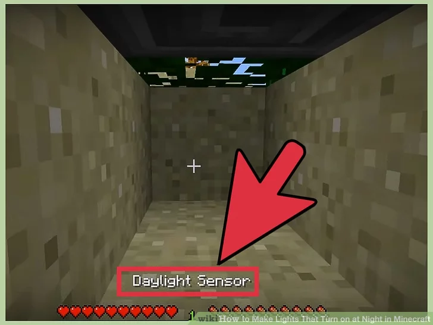
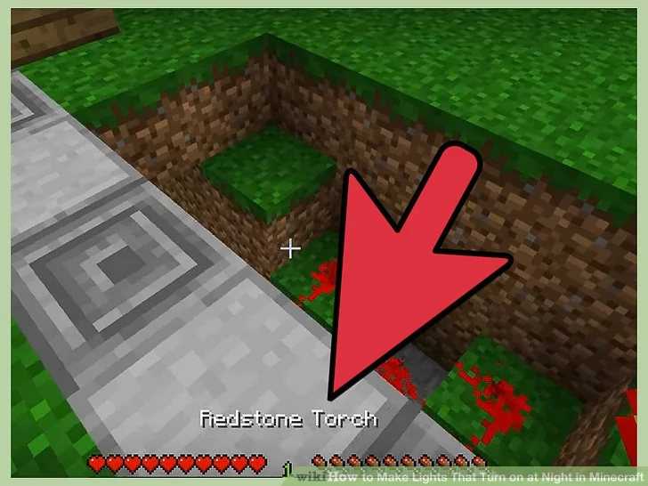
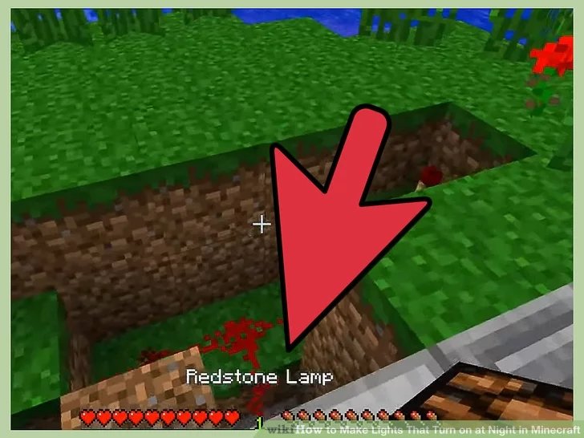

Lighting System
How to Make Lights That Turn on at Night in Minecraft
4: Transform it to detect night instead.
There are two ways to change this sensor's behavior:
Surround it with opaque blocks to make it a night sensor. This
will send a power signal only at night, reaching peak strength at midnight (time 17780–18240).
Or right-click it to make it
an inverted sensor (blue surface). This sends out a stronger signal in dark conditions. Unlike the night sensor, this can turn
on in the daytime during rainy or stormy weather.
5: Connect it to a redstone lamp.
Place a line of redstone from the sensor to a redstone lamp. Depending on which sensor you used, the lamp will either
turn on at night, or anytime the sensor is dark.
To make a redstone lamp, surround a glowstone block with four redstone
dust.
Night sensors (but not inverted sensors) will blink on and off if the lamp they are connected to is exposed to the
outside sky or window. Place the lamp in a windowless room to prevent this, or right-click the sensor to invert it. Note that in
Minecraft 1.7 and below, daylight sensors cannot be inverted to turn on at night. Watch the video below to find out how to invert
it (skip to 42 seconds)
6: Adjust the timing
These sensors don't just have two states. They will gradually increase and decrease in power over the course of each
day/night cycle. To make your lamp turn on earlier in the dusk, shorten the redstone path or insert some redstone repeaters
to boost the signal. To make the lamp stay off until later at night, lengthen the redstone path.
To make a redstone repeater,
place redstone dust in the center with a redstone torch on either side, all above three stone blocks.
Redstone repeaters
have a front and a back. Make sure to place it so the signal goes in the right direction.